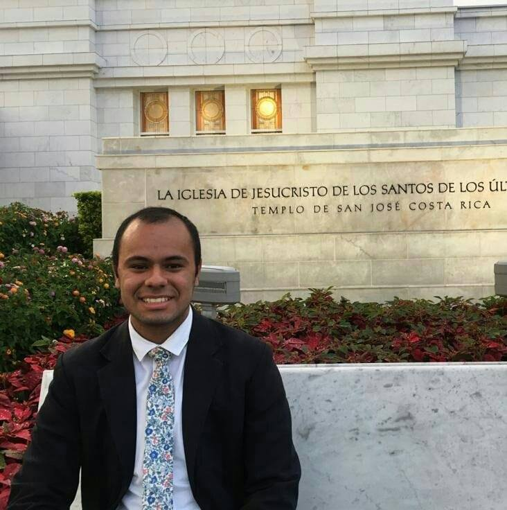

About Me
My name is Ronaldo Campos, and I hail from Costa Rica. I am part of a family of six, including my parents and three older brothers. Professionally, I am engaged as a Junior Software Developer, a role that affords me considerable opportunities to deepen my expertise in this dynamic field. I am passionate about leveraging these opportunities to enhance my skills and knowledge continuously.
Costa Rica
Costa Rica is a vibrant Central American country known for its stunning natural landscapes and a strong commitment to environmental conservation. It is bordered by Nicaragua to the north, Panama to the southeast, the Pacific Ocean to the west, and the Caribbean Sea to the east. The country is celebrated for its rich biodiversity, containing a wide array of wildlife and ecosystems within its numerous national parks and protected areas.